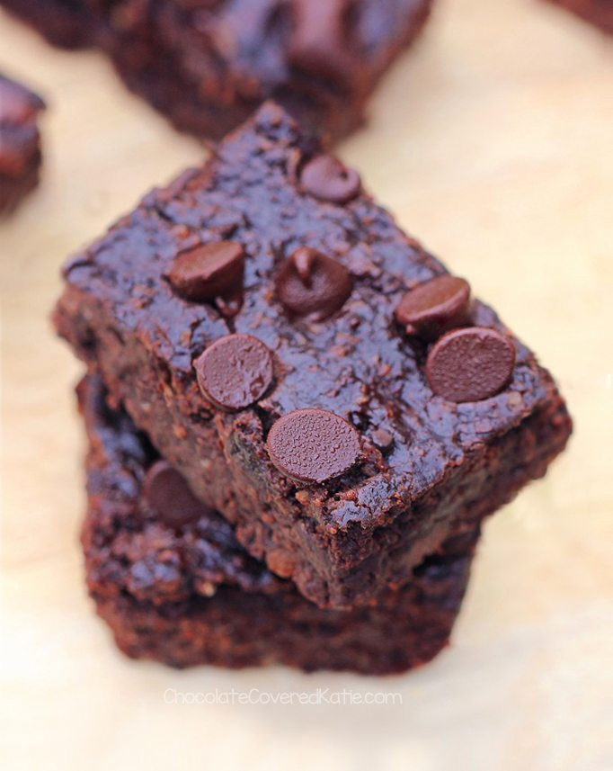

Black Bean Brownies

Description
Dense, rich, decadent chocolate-chip laden brownies. But with less guilt and more flavor than a lot of box-recipe brownies! This one is a house favorite and a really nice way to scratch that chocolate itch with a healthy spin.
Ingredients for black bean brownies
- 1 1/2 cups black beans (1 15-oz can, drained and rinsed thoroughly)
- 2 tbsp cocoa powder
- 1/2 cup quick oats
- 1/4 tsp salt
- 1/3 cup pure maple syrup, honey, or agave
- Pinch of uncut stevia, OR 2 tbsp sugar (OR omit and increase maple syrup to 1/2 cup)
- 1/4 cup coconut or vegetable oil
- 2 tsp pure vanilla extract
- 1/2 tsp baking powder
- 1/2 cup - 2/3 cup chocolate chips
Steps
- Preheat your oven to 350°F.
- Combine all ingredients except the chocolate chips in a food processor, and blend until completely smooth.
- Stir in the chocolate-chips, reserving some to sprinkle on the top, then pour into a greased 8x8 baking pan. Sprinkle on remaining chocolate chips.
- Cook for 15 - 18 minutes, then let cool for at least 10 minutes before cutting and serving.